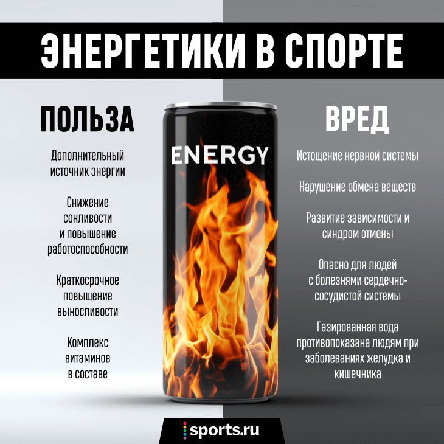

ческие напитки оказывают эффект за счёт кофеина и сахара, но доказательств того, что широкий спектр других ингредиентов оказывает какое-либо влияние, практически нет. Большинство воздействий энергетических напитков на когнитивную деятельность, таких как повышение внимания и скорости реакции, в основном объясняются присутствием кофеина. Другие исследования приписывают эти улу
marmelafdfdd
Энергетический напиток (разг. энергетик) — sdsdsэто тип напитка, содержащий стимулирующие компоненты, обычно кофеин, который рекламируется как обеспечивающий умственную и физическую стимуляцию. Может быть газированным или нет, а также может содержать сахар, другие подсластители, экстракты трав, таурин и аминокислоты.
Энергетические напитки оказывают эффект за счёт кофеина и сахара, но доказательств того, что широкий спектр других ингредиентов оказывает какое-либо влияние, практически нет. Большинство воздействий энергетических напитков на когнитивную деятельность, таких как повышение внимания и скорости реакции, в основном объясняются присутствием кофеина. Другие исследования приписывают эти улучшения производительности эффектам комбинированных ингредиентов. Реклама энергетических напитков обычно говорит об увеличении мышечной силы и выносливости, но научного консенсуса, подтверждающего эти утверждения, нет
- СОЛНЕЧНАЯ ЭНЕРГИЯ Солнечная энергия является самым богатым из всех энергетических ресурсов и может использоваться даже в пасмурную погоду. ...
- ЭНЕРГИЯ ВЕТРА ...
- ГЕОТЕРМАЛЬНАЯ ЭНЕРГИЯ ...
- ГИДРОЭНЕРГИЯ ...
- ЭНЕРГИЯ ОКЕАНА ...
- БИОЭНЕРГИЯ

ffff
ffff